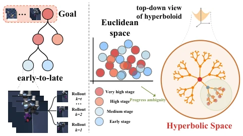
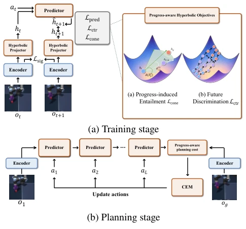
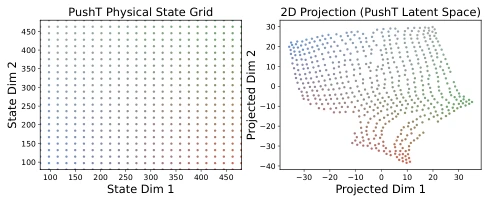
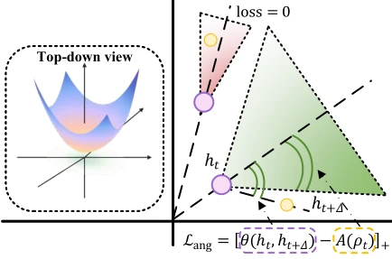
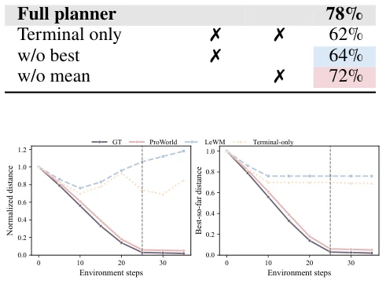
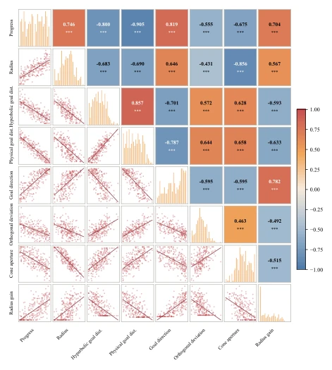
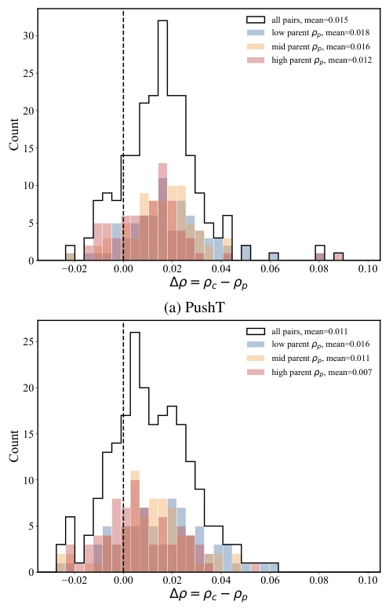
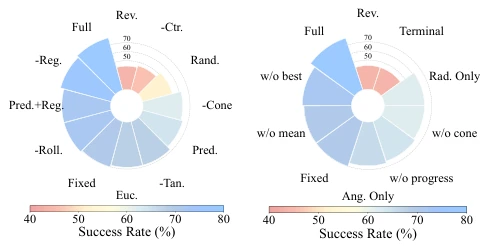
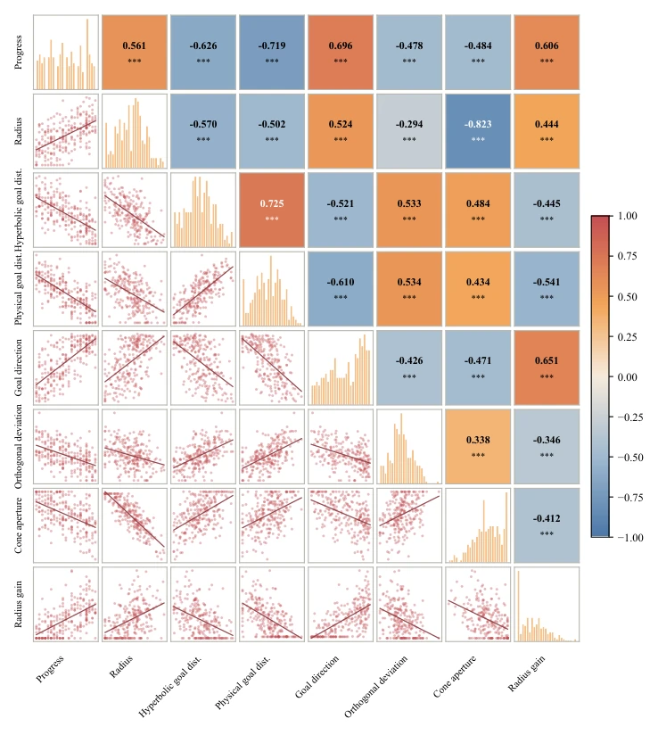

This paper opens a "geometric cheat code" for long-horizon visual planning. JEPA-style models (such as LeWM), while accurate in prediction, tend to get "lost" in long sequences, where local rationality does not imply global correctness. ProWorld forcibly embeds the latent space into hyperbolic geometry, utilizing its hierarchical properties to constrain the progress direction. Although the 9.67% improvement looks good, the training stability of hyperbolic space is somewhat esoteric, and the improvement for short-horizon tasks is limited, feeling as if geometry is used merely for the sake of geometry. However, explicitly modeling "progress order" into world models is indeed a viable approach, at least stronger than pure pixel prediction. It shows significant effects on long-horizon tasks like AntMaze, but the advantage is not obvious on simple PushT, indicating that geometric priors are not a panacea, but provide a new geometric perspective for long-horizon planning, worth verifying in more complex scenarios.
研究动机Motivation
现有 JEPA 风格模型（如 LeWM [Maes et al. 2026]）主要关注局部状态转移一致性，即预测下一步潜表示。但在长视界任务中，仅靠局部预测无法保证持续向目标推进。多步 rollout 可能局部合理但全局漂移，且视觉上相似的状态可能对应不同的长期进度，导致潜空间歧义 [Eysenbach et al. 2022]。这暴露了预测目标与下游控制性能的不匹配 [Lambert et al. 2020]。此外，欧氏空间难以有效编码这种非均匀层级结构，导致早期状态和未来可能性无法区分。因此需要一种能排序状态相对进度的结构，而双曲几何天然适合这种粗到细的层级关系，能更好地组织从低进度到高进度的状态演化，解决长程规划中的累积误差问题。
Existing JEPA-style models (such as LeWM [Maes et al. 2026]) mainly focus on local state transition consistency, i.e., predicting the next latent representation. However, in long-horizon tasks, relying solely on local prediction cannot guarantee continuous progress towards the goal. Multi-step rollouts may be locally rational but globally drift, and visually similar states may correspond to different long-term progress, leading to latent space ambiguity [Eysenbach et al. 2022]. This exposes the mismatch between prediction objectives and downstream control performance [Lambert et al. 2020]. Furthermore, Euclidean space struggles to effectively encode such non-uniform hierarchical structures, leading to an inability to distinguish early states from future possibilities. Therefore, a structure capable of ordering relative state progress is needed, and hyperbolic geometry is naturally suitable for this coarse-to-fine hierarchical relationship, capable of better organizing state evolution from low progress to high progress, solving the cumulative error problem in long-horizon planning.

Figure 1: Core motivation of ProWorld. In Euclidean la- tent space, locally similar future states may be mapped to nearby regions, causing progress ambiguity in long- horizon goal-directed planning. ProWorld organizes goal- conditioned progress in a hyperbolic latent space, where low-progress early states correspond to wider future possibil- ities while high-progress later states progressively contract toward more specific goal-relevant regions.
方法Method
整体流程：像素观测编码为欧氏潜变量，映射到 Lorentz 双曲空间，通过动作条件自回归预测器生成未来状态。训练阶段引入三个核心损失：1) 双曲预测损失，对齐预测与真实未来点；2) 双曲未来判别损失，通过对比学习分离局部相似但进度不同的状态；3) 进度诱导蕴含约束，构建以目标为锚点的自适应圆锥，强制子状态位于父状态指向目标的锥内且距离更近。推理阶段使用 CEM 搜索动作序列，规划成本函数同时考量终端距离和中间状态的平均/最佳距离，确保中间过程不偏离。具体而言，双曲投影头将欧氏特征转换到切空间，再通过指数映射进入流形。蕴含损失中的圆锥孔径随距离动态调整，远离目标时允许更大偏差，靠近时收紧约束。这种设计显式利用了双曲空间的负曲率特性，将进度顺序转化为几何约束，而非仅靠数据驱动，有效缓解了长视界规划中的漂移问题。
Overall process: Pixel observations are encoded as Euclidean latent variables, mapped to Lorentz hyperbolic space, and future states are generated through an action-conditioned autoregressive predictor. Three core losses are introduced during the training phase: 1) Hyperbolic prediction loss, aligning predictions with true future points; 2) Hyperbolic future discrimination loss, separating locally similar but progress-different states through contrastive learning; 3) Progress-inducing inclusion constraint, constructing an adaptive cone anchored at the goal, forcing sub-states to be within the cone pointed to by the parent state towards the goal and closer in distance. During the inference phase, CEM is used to search for action sequences, and the planning cost function considers both terminal distance and the average/best distance of intermediate states to ensure the intermediate process does not deviate. Specifically, the hyperbolic projection head converts Euclidean features to the tangent space, then enters the manifold via exponential mapping. The cone aperture in the inclusion constraint loss adjusts dynamically with distance, allowing larger deviations when far from the goal and tightening constraints when close. This design explicitly utilizes the negative curvature properties of hyperbolic space, transforming progress order into geometric constraints rather than relying solely on data-driven methods, effectively alleviating the drift problem in long-horizon planning.

Figure 2: Overview of ProWorld, including progress-aware hyperbolic dynamics learning and CEM-based latent plan- ning.

Figure 5: PushT physical state grid and t-SNE projection of ProWorld latents. The visualization shows local continuity and a radial expansion trend in the learned latent space.
Tested on four tasks of OGBench (PushT, Cube-S, AntMaze-L, Scene). Baselines include LeWM, C-JEPA, TD-MPC2, etc. The metric is Success Rate (SR). ProWorld achieves an average improvement of 9.67%, with significant improvement on the long-horizon task AntMaze-L (32% vs 22%). Ablation studies show that removing the contrast loss or inclusion cone leads to a significant performance drop, proving the importance of the progress structure. Visualizations show the latent space exhibits a radial expansion trend, and the distance curves during planning are closer to the true trajectory. Furthermore, ablation experiments on geometric structures confirm that hyperbolic space outperforms Euclidean space, and adaptive cones are more effective than fixed apertures, indicating that dynamic constraints are crucial for long-horizon planning. Code will be released after paper acceptance, currently verified only based on OGBench, generalization still needs observation.

Figure 3: Illustration of the goal-anchored adaptive entail- ment cone. The green region denotes the zero angular- violation area, where the child direction from the parent remains aligned with the parent-to-goal direction.

Figure 6: Planning-time progress on PushT. ProWorld main- tains a goal-distance profile closer to ground-truth progress than LeWM and terminal-only planning.

Figure 7: Spearman correlation analysis of progress-related geometric variables on PushT.

Figure 8: Diagnostic parent-child radial displacement grouped by parent radius. Positive values indicate that the child has a larger Lorentz radius than the parent.

Figure 10: Polar bar visualization of the ablation studies in the main text. Both color and radial length represent plan- ning SR, with the color scale ranging from red (low) to blue (high). (a) Summarizes the learning objective ablation and the geometry-and-progress-order ablation; (b) summarizes the entailment cone design ablation and the planning objec- tive ablation. All results are obtained on Cube-S; Full denotes the complete ProWorld.Figure 12: Open-loop prediction visualizations on PushT. The left column shows the context input, i.e., the ground-truth historical frames visible to the model before forecasting; the right column shows the open-loop prediction, i.e., future states obtained by recursively unrolling the model from the same context under a given action sequence. The top and bottom rows correspond to ground-truth observations and model-imagined results, respectively, enabling a comparison of whether ProWorld’s short-term object motion predictions preserve spatial trends consistent with the true trajectory.
其他图片Other Figures

Figure 11: Spearman correlation analysis of progress-related geometric variables on Cube-S. The layout follows the PushT matrix in Fig. 7.